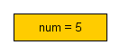
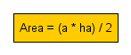
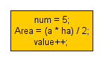
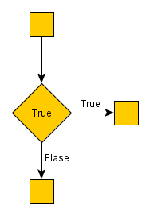
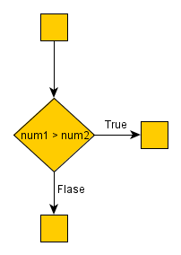
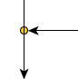

It is time to look at the different flow chart symbols. These are
the symbols that we, as programmers will use. Other engineering plans
could use additional symbols (like delays, synchronization and others),
but we will stick to the programming part.
Do you learn better from video?
Learn faster with deeper understanding! |
The first figure is oval. Also could be met as an “ellipse”, ”circle”, but it has the same meaning. This is the first and the last symbol in every flow chart. I like to use ellipse for “begin” and “end”. When I divide an algorithm in several parts I use small circles for the start/end of each part.
We insert text inside the symbols to clarify its meaning. So…
This means “start” or said as a programmer – “An entry point for the algorithm”. “Begin” element is always the first element of a flow chart. This is where our algorithm starts. “Begin” has no input arrows and has exactly one output.
Flow chart symbol "end". Algorithm completed. It could have several inputs and no output. Every scheme must have a begin and an end symbol.
This is what we will be using to separate big charts in smaller fragments. Inbound arrow in the circle means that this part of the algorithm is completed and the algorithm continues with its next part. Of course the next fragment begins with a numbered circle with the same number and an outgoing arrow.
You will use a rectangle to perform an action (also called "statement"). More precisely, we use them for assignment statements - when you change a value of a variable.
An action(rectangle) block may have one or several inputs and exactly one output. For instance :
|

|
The variable “num” takes the value 5. |
|

|
Calculate an equation and save the result in a variable called “Area”. |
|

|
If you do several consecutive actions you can combine them in a single figure. |
The parallelogram flow chart symbol serves for input/output(I/O) to/from the program.
One note: output means that the program gives an output, for example – display a message on the screen. Input is an input to the program. It could be when the user enters a value for a variable.
I/O block may have one or several input arrows and exactly one output.
Rhombus : This is what we use when our program has to make a decision. This is the only block that has more than one exit arrow. The rhombus symbol has one(or several) entrance point and exactly two outputs.
Inside it stays a valid conditional expression. The expression could be evaluated as “true” or “false”. If the result is true, the next step of the algorithm is the element, pointed by the “True” (Yes) arrow. If the condition is false we continue with the “false”(No) arrow. Note that both cases must be handled – you can’t leave one of them handing.
|

|
This is a valid example of a decision. The result will always be the right way. Of course, it does not make a lot of sense to make such “decision”, but this could be used as a point, where in future we want to put a different condition(perhaps, including new functionality). |
|

|
A comparison of the values of the variables “num1” and “num2”. If
num1 is greater than num2, we will continue with the “true” arrow. If
num2 is equal to, or greater than num1, the condition is false and we
continue downwards. Note: it is up to you to choose the “true” and “false” directions. |
Arrows show the order of the blocks in the chart flow. There is no convention for the direction of the arrows. We choose which direction is better for our graphics.
|

|
Junction flow chart symbol : You can connect two arrows with a junction. |
Do you learn better from video?
Learn faster with deeper understanding! |
Here is an example of a short algorithm, using each flow chart symbol.
|
Previous: Flow Chart |
Next: Data Type |
Tutorial Contents:
1)Learn
Computer Programming
2)Software Development Process
3)Flow
Chart
4)Flow
Chart Symbols
5)Data
Type
6)What is a variable
7)Math
Operators
8)Logical
Operators
9)Loops
10)Nested Loops
11)Arrays
12)Multidimensional arrays
13)Programming Questions
|
Did this help? Support me with your vote ;-) |
|
|
|
Did this help? |
|
|